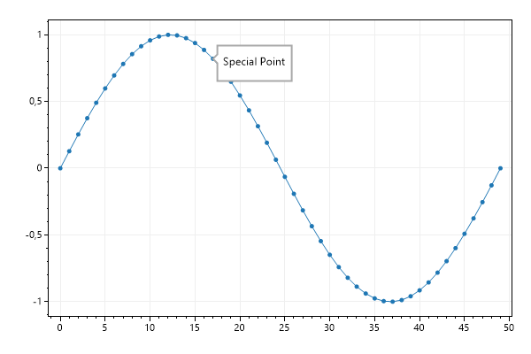
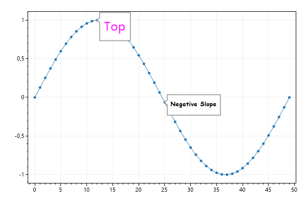
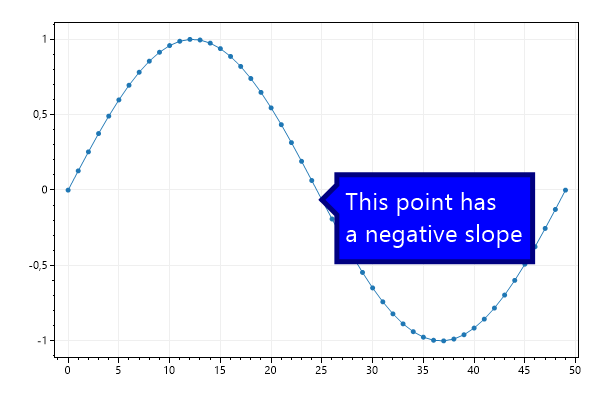

This page contains recipes for the Tooltip category.
Visit the Cookbook Home Page to view all cookbook recipes.
Visit the Cookbook Home Page to view all cookbook recipes.
Tooltip Quickstart
Tooltips are annotations that point to an X/Y coordinate on the plot
var plt = new ScottPlot.Plot(600, 400);
double[] ys = DataGen.Sin(50);
plt.AddSignal(ys);
plt.AddTooltip(label: "Special Point", x: 17, y: ys[17]);
plt.SaveFig("tooltip_quickstart.png");

Tooltip Font
Tooltips fonts can be customized
var plt = new ScottPlot.Plot(600, 400);
double[] ys = DataGen.Sin(50);
plt.AddSignal(ys);
var tt1 = plt.AddTooltip("Top", 12, ys[12]);
tt1.Font.Color = System.Drawing.Color.Magenta;
tt1.Font.Size = 24;
var tt2 = plt.AddTooltip("Negative Slope", 25, ys[25]);
tt2.Font.Name = "Comic Sans MS";
tt2.Font.Bold = true;
plt.SaveFig("tooltip_font.png");

Tooltip Colors
Tooltips border and fill styles can be customized
var plt = new ScottPlot.Plot(600, 400);
double[] ys = DataGen.Sin(50);
plt.AddSignal(ys);
var tt = plt.AddTooltip("This point has\na negative slope", 25, ys[25]);
tt.Font.Size = 24;
tt.Font.Color = System.Drawing.Color.White;
tt.FillColor = System.Drawing.Color.Blue;
tt.BorderWidth = 5;
tt.BorderColor = System.Drawing.Color.Navy;
tt.ArrowSize = 15;
plt.SaveFig("tooltip_colors.png");
